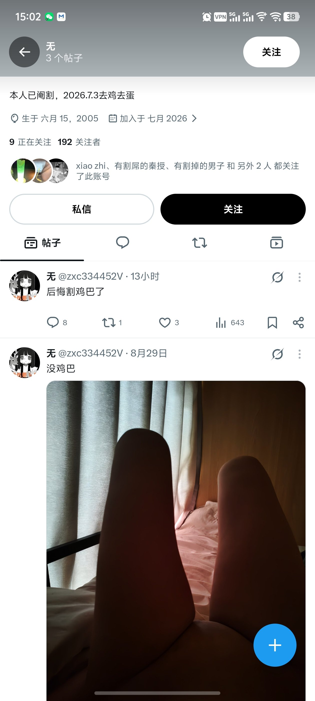

hsn今天吃什么
@hsn8086k
以后我也来, 开一个小号, 发一张几把, 发一张没几把, 发一条后悔割几把了, 不做其他任何互动.
然后再开个小号, 说, "虽然很同情,但是成年人要为自己的行为负责。".
然后再开个小号, 说"以后我也来, 开一个小号...".

Ox_Ford
@zoro58161443
虽然很同情，但是成年人要为自己的行为负责。还有那些准备想割的，或者说看了一些别人的视频，图片，就有那种冲动的，还是要慎重，这个没有后悔药的。我见了很多人都说不后悔不后悔，结果80%都会后悔的这个东西。不要被别人发的那些东西一时之间荷尔蒙冲上头了，冲昏了头脑。世界上没有后悔药，兄弟们 https://t.co/PVml8idvNx